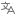
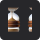
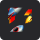

Pomodoro
Gerencie seu tempo de maneira mágica!

Dados da sessão
Acompanhe os próximos cíclos

Modo atual:
Cíclo atual do cronômetro
Próximo modo:
Qual cíclo será ativado
00:00
Settings
Focus time:
Select the focus time 25 - 50
25
Short break:
Select the short break 5 - 10
5
Long break:
Select the long break 15 - 30
15
Lista de tarefas
Seus objetivos para essa sessão

Adicionar